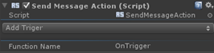

Send Message Action |
Top Previous Next |
|
The Send Message action uses Unity’s “Send Message” capability and calls the function listed in “Function Name” with the selected trigger as the argument. Note that this function must exist in at least one script that is attached to the same Game Object. This action is a one-shot custom trigger action.
|